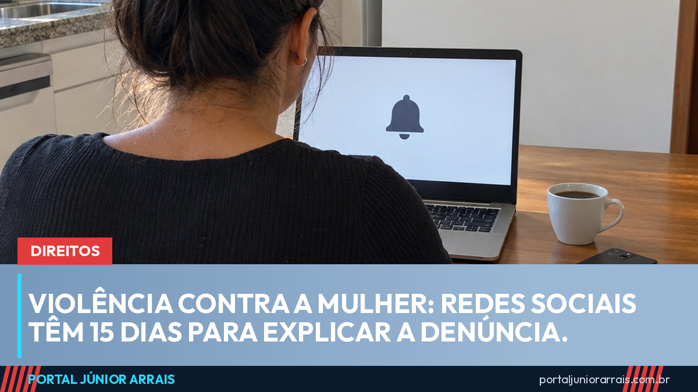

Governo dá 15 dias para redes sociais explicarem como recebem denúncia de violência contra a mulher

O governo federal deu 15 dias para as plataformas digitais explicarem, por escrito, como funcionam os seus canais de denúncia de violência contra a mulher na internet. A cobrança está num ofício enviado em 11 de setembro por três secretarias: a de Políticas Digitais, a de Direitos Digitais, ambas no Ministério da Justiça, e a de Enfrentamento à Violência contra as Mulheres. A base é o Decreto 12.976/2026, combinado com o artigo 21 do Marco Civil da Internet, que trata da retirada de conteúdo íntimo divulgado sem consentimento.
O que interessa a quem sofre esse tipo de violência é o resultado prático: as redes vão ter de dizer em quanto tempo analisam uma denúncia, confirmar que a receberam, permitir que a vítima acompanhe o pedido e impedir que o mesmo conteúdo volte a ser postado depois de removido.
O que as plataformas precisam informar
- o prazo em que uma denúncia de violência contra a mulher é analisada;
- a confirmação de recebimento para quem denunciou;
- um meio de rastrear a solicitação, do registro à resposta;
- como evitam o reenvio de conteúdo já removido, como fotos íntimas e vídeos de agressão;
- um ponto focal no Brasil, uma pessoa ou equipe responsável por responder às autoridades.
O prazo de 15 dias é "sugerido" no ofício, mas a obrigação de manter canal de denúncia já existe por lei. A diferença é que, agora, o governo quer as respostas em detalhe e por escrito, e a partir delas pode fixar regras comuns para todas as redes.
Onde a denúncia funciona hoje
Enquanto as plataformas respondem, os canais públicos continuam os mesmos, e é importante não confundir os dois:
- 190 é a Polícia Militar: é o número para o momento do perigo, quando a agressão está acontecendo ou prestes a acontecer;
- 180 é a Central de Atendimento à Mulher: funciona 24 horas, orienta, acolhe e registra a denúncia, encaminhando para a rede de proteção. Não é socorro imediato;
- a delegacia da mulher pela internet, que o portal explicou em agosto, registra o boletim de ocorrência e pede a medida protetiva sem sair de casa, mas também não substitui o 190 numa emergência.
Para a violência que acontece pela tela, como ameaça por mensagem, perseguição em rede social e divulgação de imagem íntima, a denúncia na própria plataforma e o registro do boletim caminham juntos. Guardar prints com data, nome do perfil e link ajuda em qualquer um dos caminhos.
O que mais está em andamento
A cobrança às redes se soma a outras medidas recentes. O Senado aprovou neste mês o protocolo único de atendimento a vítimas de violência sexual, que integra hospital, delegacia e perícia, e a Comissão de Segurança Pública discute o porte de arma para mulheres com medida protetiva.
Quem está passando por uma situação de violência e não sabe por onde começar pode procurar um profissional de sua confiança ou uma unidade da rede de atendimento à mulher para entender o caminho da medida protetiva e da denúncia. O importante é não ficar sozinha.
Conteúdo informativo — não substitui orientação individualizada sobre o seu caso.
Júnior Arrais · Editor do Portal Júnior Arrais
Comunicador de Ubá (MG). Escreve todos os dias sobre benefícios sociais, INSS, trabalho e economia do dia a dia, a partir do Diário Oficial, de portarias e de fontes oficiais, em linguagem simples. Conheça a linha editorial e a política de correções do portal.